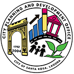

BUREAU OF FIRE PROTECTION
BUREAU OF JAIL MANAGEMENT AND PENOLOGY

CITY AGRICULTURE OFFICE
CITY ANTI-DRUG ABUSE OFFICE

CITY BUSINESS PERMIT AND LICENSING OFFICE

CITY COOPERATIVE DEVELOPMENT OFFICE
CITY DISASTER RISK REDUCTION MANAGEMENT OFFICE

CITY ENVIRONMENT AND NATURAL RESOURCE OFFICE

CITY HEALTH OFFICE II
CITY INFORMATION TECHNOLOGY OFFICE

CITY PLANNING AND DEVELOPMENT OFFICE

CITY SOCIAL WELFARE AND DEVELOPMENT OFFICE

CITY SPORTS DEVELOPMENT OFFICE

CITY TOURISM OFFICE
CITY URBAN DEVELOPMENT AND HOUSING OFFICE

CITY VETERINARY OFFICE

DEPARTMENT OF EDUCATION

DEPARTMENT OF THE INTERIOR AND LOCAL GOVERNMENT

OFFICE OF THE BUILDING OFFICIAL

OFFICE OF THE CITY CIVIL REGISTRAR OFFICE
OFFICE OF THE SENIOR CITIZEN'S OFFICE
PERSON WITH DISABILITY AFFAIRS OFFICE
PUBLIC EMPLOYMENT SERVICE OFFICE
PUBLIC ORDER AND SAFETY OFFICE

SANGGUNIANG PANLUNGSOD
SANTA ROSA COMMUNITY HOSPITAL

SANTA ROSA MANPOWER TRAINING CENTER

THE PHILIPPINE NATIONAL POLICE